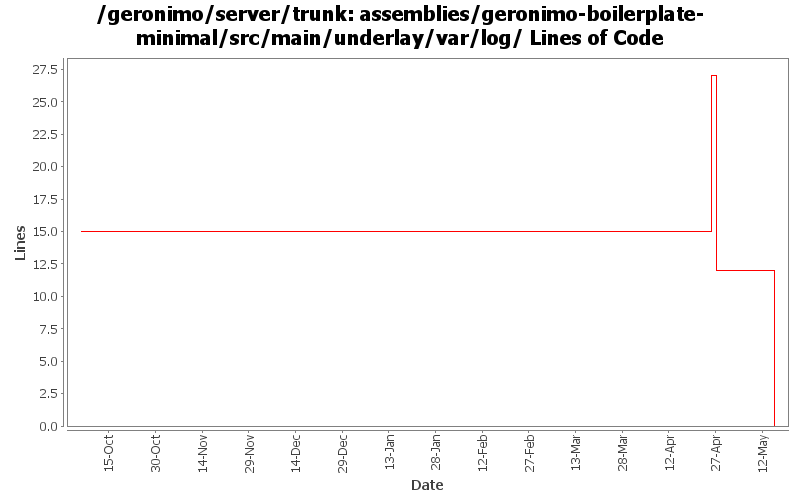

[root]/assemblies/geronimo-boilerplate-minimal/src/main/underlay/var/log

| Author | Changes | Lines of Code | Lines per Change |
|---|---|---|---|
| Totals | 14 (100.0%) | 25 (100.0%) | 1.7 |
| jdillon | 10 (71.4%) | 25 (100.0%) | 2.5 |
| dwoods | 4 (28.6%) | 0 (0.0%) | 0.0 |
Drop -minimal suffix on the boilerplate, since we only have one of these now, the suffix is meaningless
0 lines of code changed in 3 files:
Drop XLevel, as of Log4j 1.2.12 there is a Level.TRACE
Re-enabled support for org.apache.geronimo.log.ConsoleLogLevel
12 lines of code changed in 3 files:
(GERONIMO-3985) Use SLF4J as the primary logging facade for Geronimo
13 lines of code changed in 4 files:
GERONIMO-3465 Default log level needs to be tweaked to provide more useful information to users
0 lines of code changed in 4 files: